I dag er verden såpas moderne at det har kommet flere måter en å gå til den gamle disken og kjøpe togbilletten der. I dag kan du faktisk kjøpe billetten din hjemme i sofaen. Du har flere nettsider som vy.no hvor du bare kan si hvor du skal og hvor du kommer fra. Deretter vil du spesifiser hva slags billett det er. Så får du mange forslag på forskjellige tog du kan ta på forskjellige tider og i tillegg får du prisen der.
-
Gå til nettsiden
Først åpner du nettleseren din søker vy også vil vy.no linken dukke opp og du kan trykker på den. Eller så kan du også velge å trykke
her
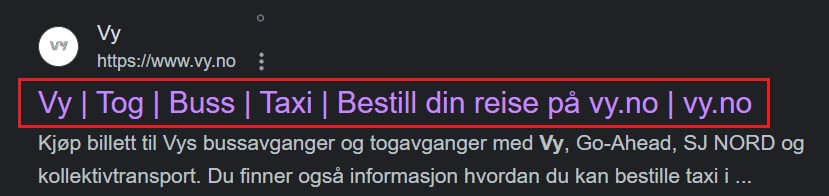
-
Hvor vil du reise?
så kan du skrive inn hvor du vil reise fra og hvor du vil hen. I tilleg kan du skirve datoen og tiden du ønsker og reise. Om du vil kan du også legge til returreise. så klikker du Fortsett
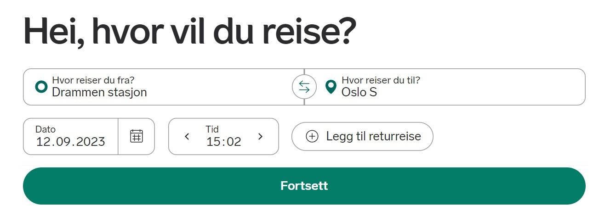
-
Hvordan vil du Reise?
Så velger du om du er voksen barn student Honnør osv. Du kan i tilleg spesifiser om du skal ha med deg sykkel kjærle dyr osv. Når du er ferdig kliker du bare på Finn Reise
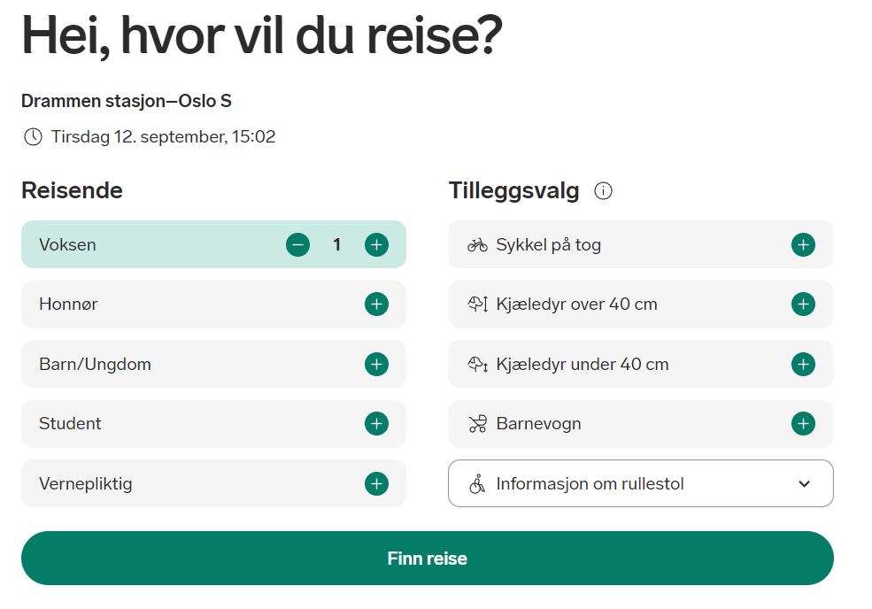
-
Finne Reisen din
Så kommer du inn der du ser alle tidene rundt den tiden du spesifiserte. Du ser også prisene der. På toppen ser du at du forstatt har mulighet til å endre om du skal ha voksenbilet returbilet osv.
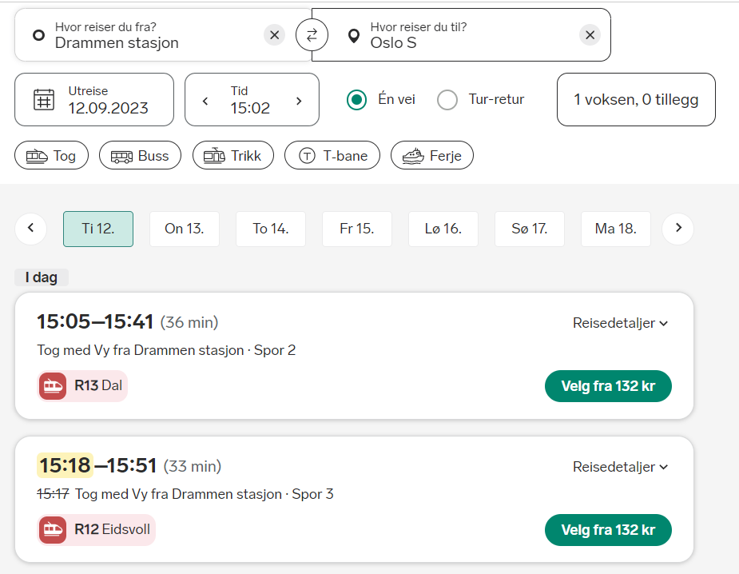
Så trykker du bare på den tiden og prisen du øsker og hvis du bare trykker på det hvite området vil detaljer for turen dukke opp. Du kan se om toget er forsinket og hvor det da befiner seg. Tider, hvor mange stopp toget har. Du kan finne ut hvor let det er å få plasser, og hvordan vy finner ut av det.
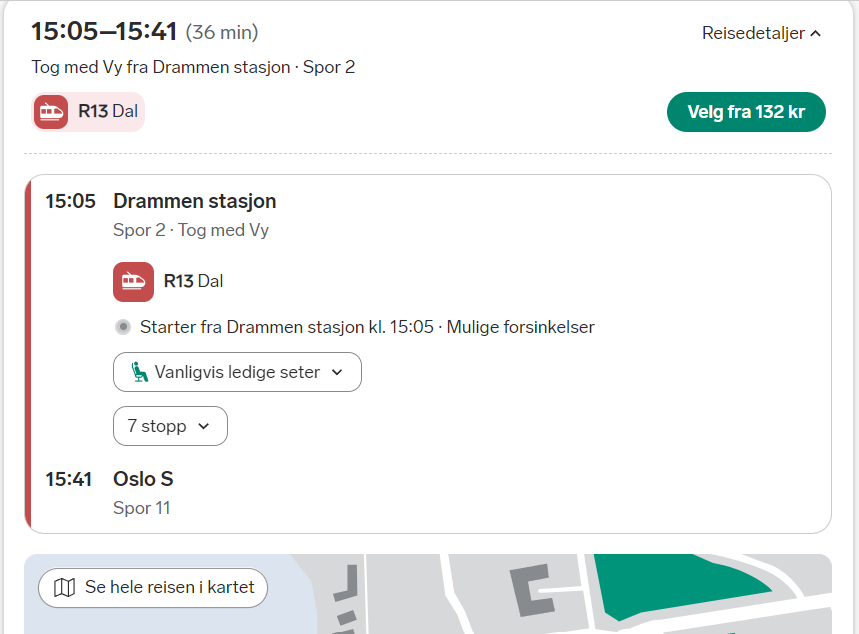
hvis du vil kjøpe billetten så trykker du på "Velg fra (prisen på bileten)"
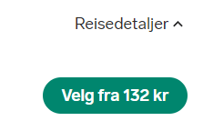
-
Velge bilettype
Så kommer du inn der du velger bilettypen din. Du ser da til høyere datoen når toget kjører og tiden det tar osv.
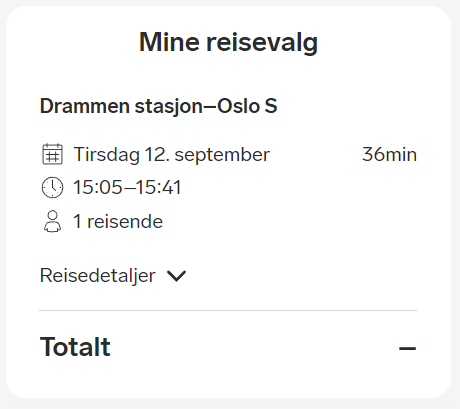
Du kan også trykke på se detaljer og se flere detaljer om toget ditt
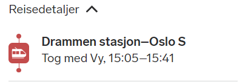
Så trykker du på et av alternativene til høyere som: Fult fleksible billetter
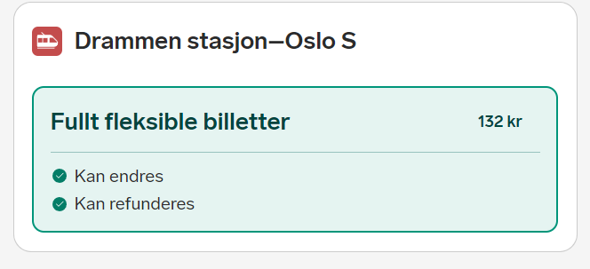
Du ser spesifiksjonene på den bileten under
Når du deretter har valgt billettype så klikker du på fortsett
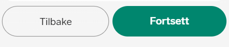
-
Velg Plass
Her er det nesten likt bare at de alternativene som dukker opp spesifiserer om du vil reservere eller ikke, i dette eksemple reserverer vi ingen plass så vi klikker bare på Uten setereservasjon og klikker på Fortsett
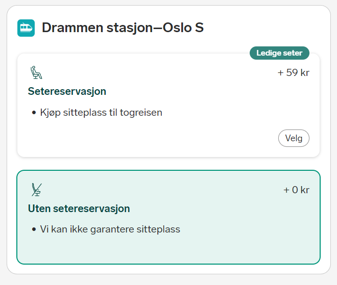
-
Log inn og betal
Nå kan du spesifisere om du skal logge inn å betale eller ikke Her skal vi ikke logge in men det kan du selv, det er bare å klikke på logg inn eller opprett profil
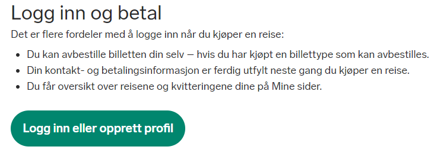
så når du har lest og forstår ulempene med og ikke logge inn klikker du på at du forstår. Så klikker du på Fortsett uten å logge inn
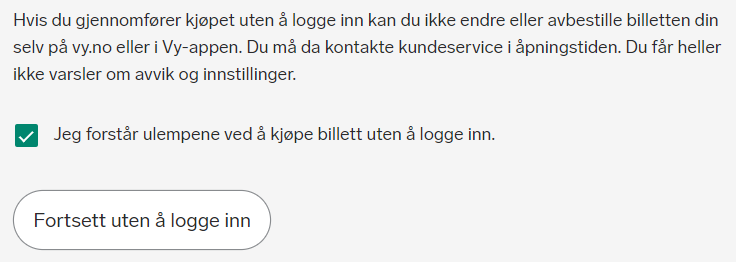
-
Bekreft og Betal
Så spesifiserer du hvordan du vil betale. Jeg velger Visa kort
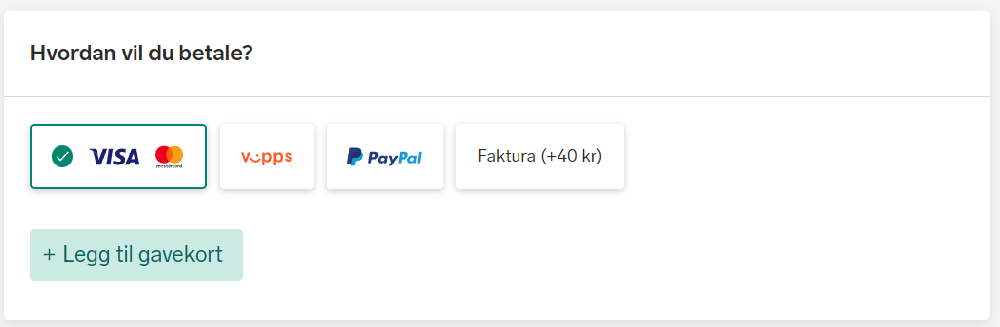
så kan du ønske å være anonum eller ikke. Da får du ikke besjed på SMS om endringer på reisen og du må sjekke selv. Du må da forttsatt oppgi E-posten din for å kunne få billeten din på E-Post
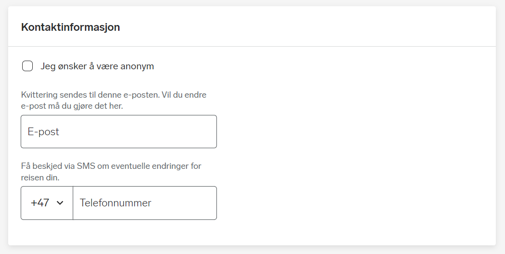
Så klikker du på Gjennomfør betaling
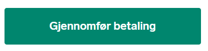
Hvis du får opp Erroren Bestillingen er ikke lenger aktiv, gå tilbake til reisesøket for å lage en ny bestilling. betyr det at du brukte for lang tid på å betale så toget har allerede kjørt eller du bare brukte for lang tid
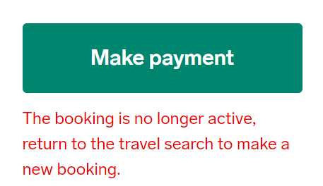
Du kan bare klikke på vy logoen for å bli sendt tilbake til starten igjen
-
Betal
Så blir du sendt for å betale. Her ser du hvor du kan bruke billetten, hvor mye den koster og ordrenummer. Du velger da korttypen din
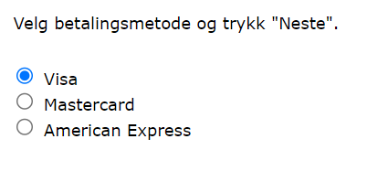
Så fyller du ut kortnummer, Utløpsdato på koortet og CVV2. Derretter klikker du Betal.
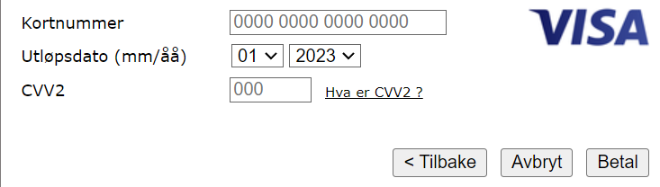
Du vil da få sms eller E-post bror på om du oppga SMS. så vil du få billetten intil en dag føre reisen din
Ha en fin reise!
Her har jeg funnet noen nettsider som kan gi deg en ide om hvor du kan reise i Norge. Det er vansklig og si hvor det beste stedet og reise i Norge er, men jeg tror disse nettsidene gir deg god informasjon som kan hjelpe deg og velge